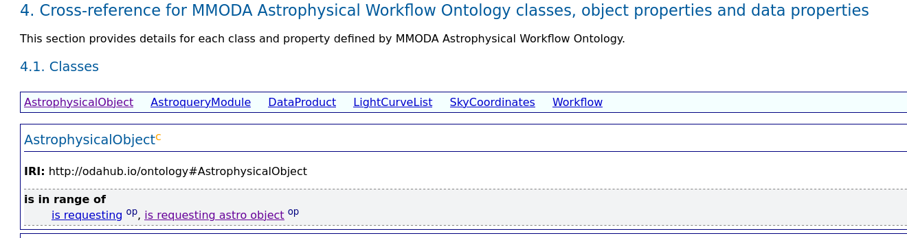

Ontology #
Purpose #
Ontology defines terms in which we describe what we do: data, workflows, publications, etc.
While creating and discovering workflows it is useful to learn to speak in these terms: find and assign suitable annotations.
In an increasingly large number of cases we identify and assign annotations automatically.
The tools we develop commit to implement the common understanding of the terms.
Discovering terms to use
#
The terms look like URLs, e.g. https://odahub.io/ontology/#AstrophysicalObject . These URLs can be directly pasted in the browser, leading to some description:

We advise to look into public ontologies like https://www.ivoa.net/rdf/object-type/2020-10-06/object-type.rdf and https://odahub.io/ontology/ for the available terms. If it looks like there is nothing suitable there - it may be necessary to introduce new terms.
Advanced: It is also possible to look into an interactive graph explorer http://graphdb.obsuks1.unige.ch/ and https://share.streamlit.io/oda-hub/streamlite-graph/javascript-lib-interaction/main/main.py .
Adding new terms to the ontology
#
Sometimes, it is necessary to add a new term. In principle, Workflow Developer may add a new term at will - it is their own understanding of what is being labeled. But the term will not be fully used until it is related to other terms in the Ontology, which is done either automatically or by the Ontology Developers.
Core Ontology Developers can improve the common ontology with http://webprotege.obsuks1.unige.ch .
There is also an experimental edit interface here, the edited result should be stored and uploaded manually.
External ontology changes should be suggested in here.
Ontology locations and versions #
As ODA ontology is evolving, it is version-controlled. The version is based on git revision, and (should be) tracked in the ontology description. Also, at any given time, there are variants of the ODA ontology of different degrees of maturity.
The principal ontology is stored in git here https://github.com/oda-hub/ontology/blob/main/ontology.ttl and published as https://odahub.io/ontology/ontology.ttl.